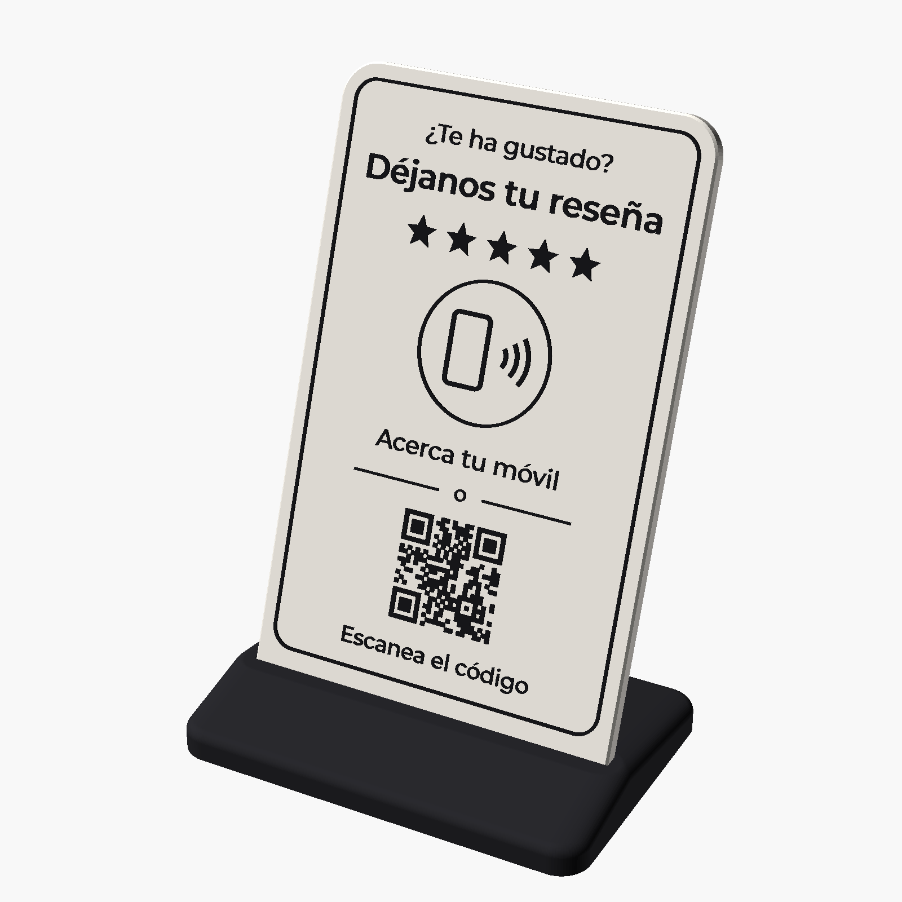
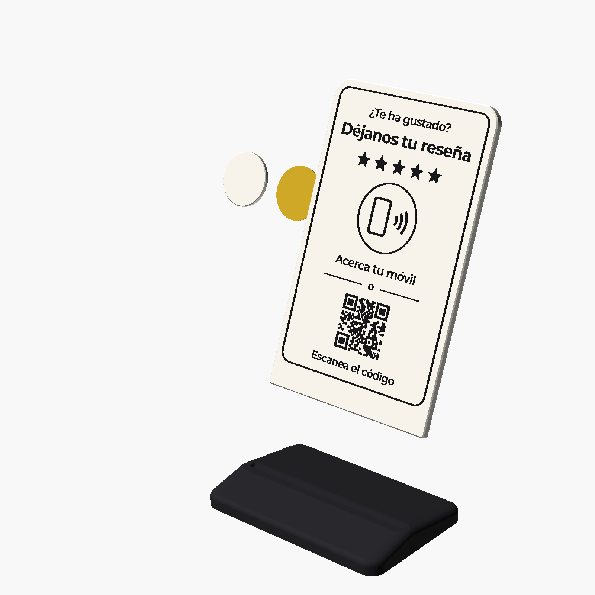
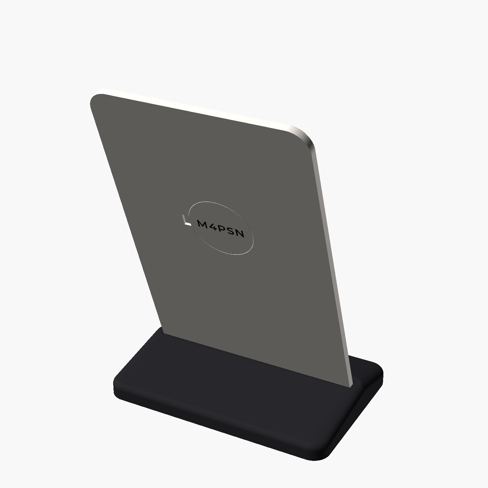
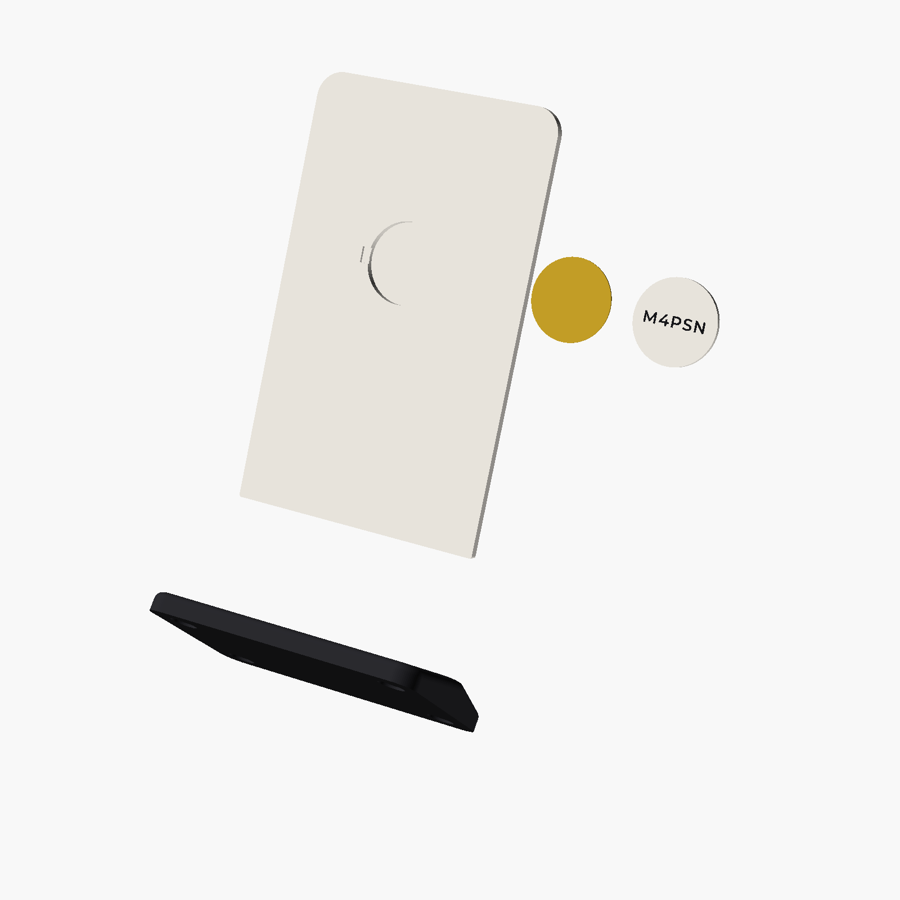
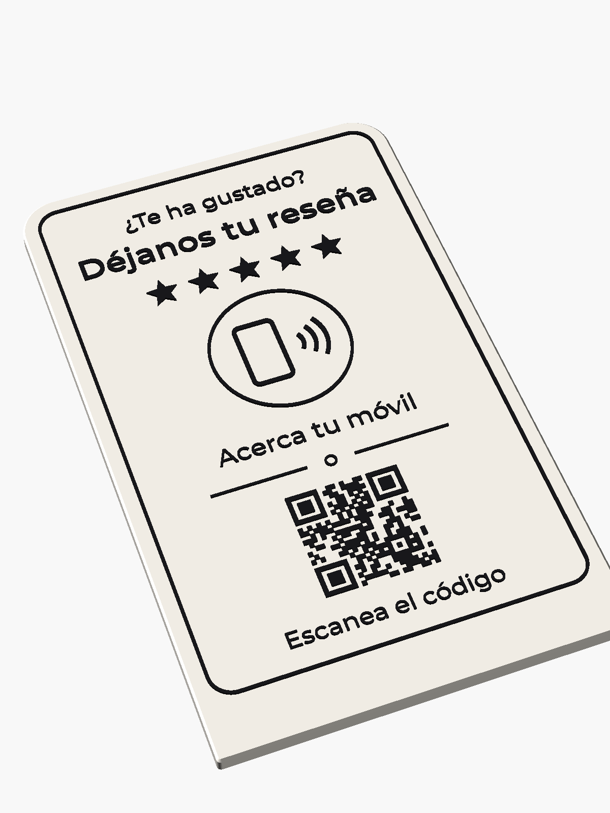
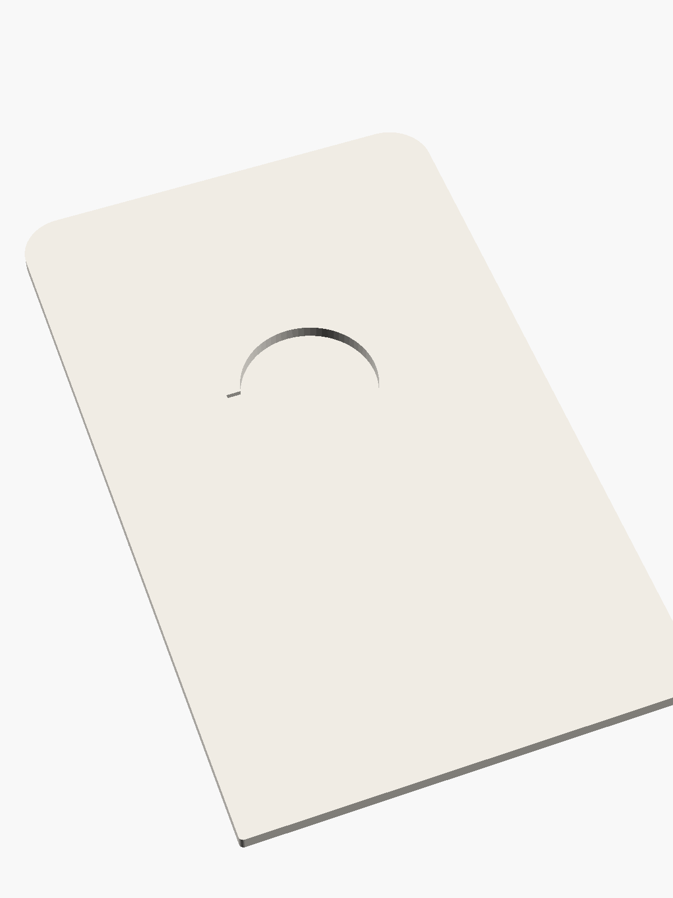
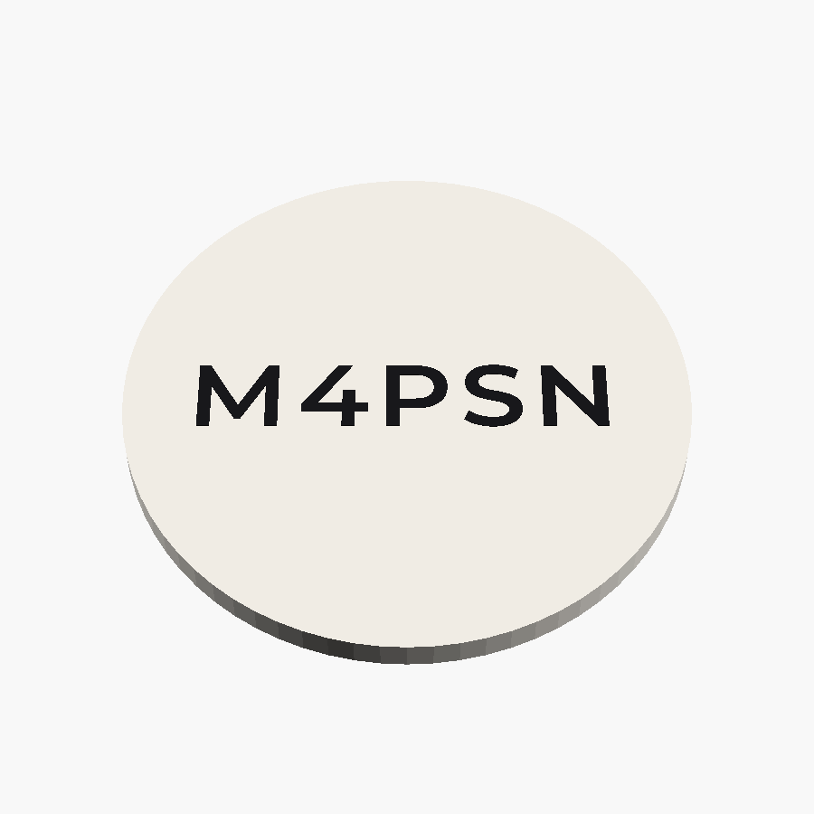
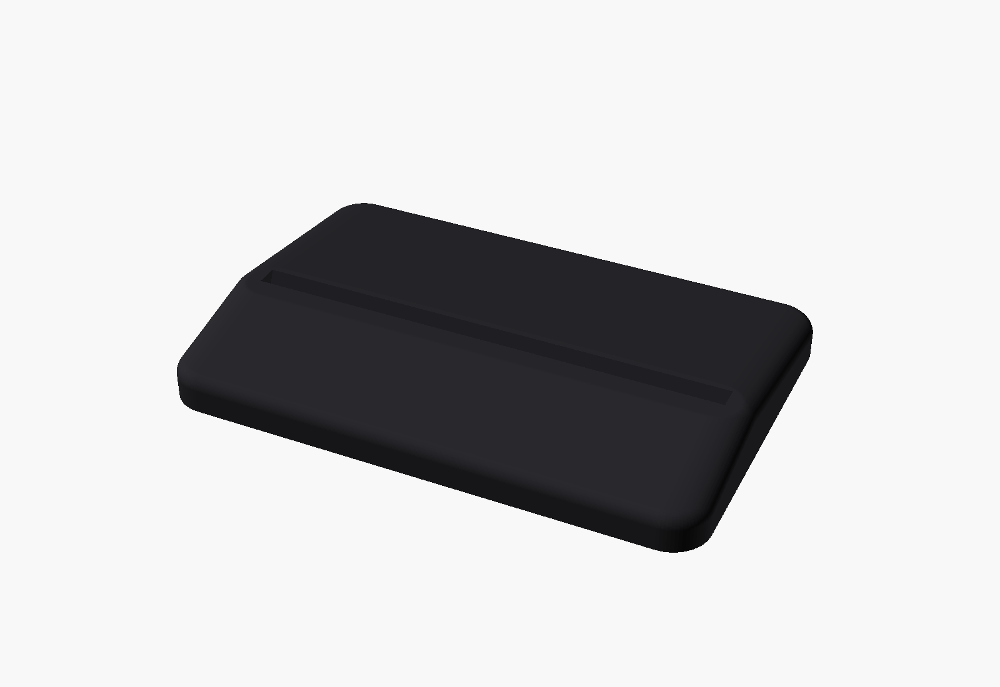
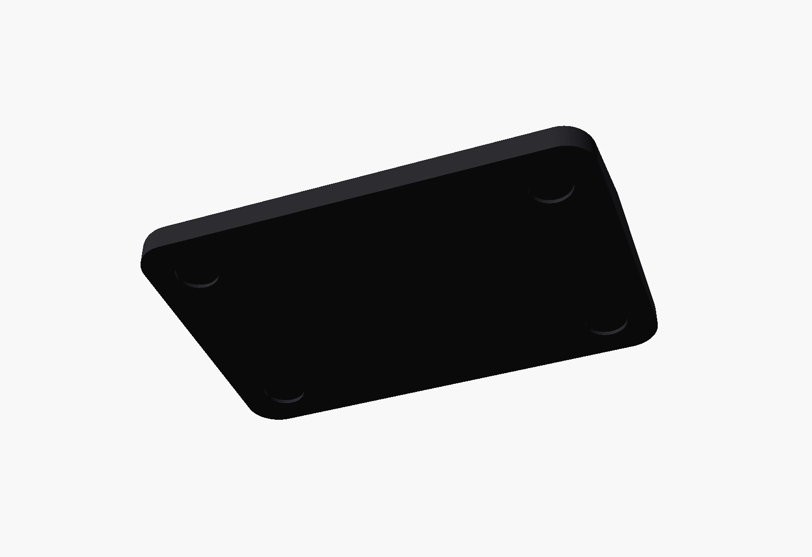

Ficha para impresión. Tres piezas impresas (placa, base y tapa) y una pegatina NFC comprada. Ejemplo con la placa de código M4PSN.




Medidas en milímetros. PLA, capa de 0,2 mm, sin soportes y sin balsa (con faldón vale) en todas las piezas.
| Pieza | Archivo | Medidas | Color | Cómo imprimir |
|---|---|---|---|---|
| Placa 1 por soporte | placa_M4PSN.stl (una distinta por código) | 100 × 165 × 4 + 0,6 de relieve |
Crema o blanco Relieve negro |
En plano, texto hacia arriba. Boquilla de 0,4 mm con «Imprimir paredes finas». 3 paredes, 20 % de relleno. Planchado (ironing) recomendado. Cambio de filamento a Z = 4,0 mm (capa 21): pausa y cambia a negro para el relieve. |
| Base 1 por soporte | base_nfc.stl (igual para todas) | 112 × 76 × 13 | Negro | Apoyada en la cara plana. 4 paredes y 25 % de relleno (para que pese). Debajo lleva 4 huecos de Ø10 para pies de goma. |
| Tapa 1 por soporte | tapa_M4PSN.stl (una distinta por código) | Ø 30,7 × 2,2 | Como la placa | En plano. El código va grabado (0,6 mm) en la cara de la cama, en espejo, para leerse bien con la tapa puesta. |
| Pegatina NFC 1 por soporte | (se compra) | Ø 30 (máx. 31) | — | Recomendada: MCalle NTAG215 redonda de 30 mm (ver la última página). Se graba desde el panel con el móvil. |





Calculadas sobre el modelo real (OpenSCAD), no a ojo. Las piezas no chocan entre sí en ninguna posición de montaje.
| Qué | Medida | Resultado |
|---|---|---|
| Placa | 100 × 165 × 4,0 mm + relieve 0,6 mm (4,6 mm en total) | Necesita una cama de al menos 100 × 165 mm (cabe en las habituales de 220 × 220) |
| Base | 112 × 76 × 13 mm | Más ancha que la placa (6 mm por cada lado) |
| Tapa | Ø 30,7 × 2,2 mm | Código grabado de 22 mm de ancho y 0,6 mm de profundidad, centrado |
| Ranura de la base | 4,4 mm para una placa de 4,0 mm (0,2 mm de holgura por lado) | Placa y base no se tocan. El relieve de delante empieza por encima de la ranura |
| Placa dentro de la base | Entra 10,6 mm (10 mm en vertical), inclinada a 70° | El marco impreso empieza a 14 mm: queda todo a la vista |
| Hueco de la pegatina | Ø 31 × 3,0 mm, con 1,0 mm de pared por delante | Sirven pegatinas de Ø 25 y de Ø 30 mm |
| Tapa en el hueco | 0,15 mm de holgura por lado, a presión | No choca. Queda 0,8 mm para la pegatina (suelen medir 0,1–0,4) |
| Estabilidad | El peso de la placa cae 28 mm por detrás de la ranura; la base sigue 46 mm | No vuelca hacia atrás ni hacia delante |
| QR (placas con código) | 28 × 28 mm, 25 × 25 módulos de 1,12 mm | Margen blanco de más de 4 módulos en todos los lados: se lee bien |
| Textos pequeños | Trazos de 0,56–0,61 mm («Acerca tu móvil», «Escanea el código») | Imprimibles con boquilla de 0,4 mm. En Cura, activa «Imprimir paredes finas». Con boquilla de 0,6 mm se perderían |
| Marco y trazos | 0,8 mm | Dos pasadas de boquilla de 0,4 mm |
| Pies de goma | 4 huecos de Ø 10,4 × 1 mm | Para pies adhesivos de Ø 10 mm |
holgura_tapa y se vuelve a imprimir solo la tapa.MCalle NTAG215, pegatina redonda de 30 mm, blanca
Amazon.es, referencia B087YHN149
amazon.es/dp/B087YHN149
Unos 17,89 € el pack (anunciado de 30 unidades, unos 0,60 € cada una) al consultarlo el 21-10-2026. La ficha de Amazon también pone «45 artículos»: comprobad el número de unidades antes de comprar.
| Por qué esta | |
|---|---|
| Cabe | Ø 30 mm en un hueco de Ø 31 mm, la más grande que entra |
| Lee mejor | A más diámetro, más antena: se lee bien a través de 1 mm de PLA |
| Grosor | Las pegatinas finas (papel o PET) caben en el espacio de 0,8 mm detrás de la tapa |
| Chip | NTAG215 (NXP): lo leen todos los móviles con NFC, iPhone incluido, y admite bloqueo permanente desde el panel |
| Memoria | 504 bytes; nuestra dirección ocupa unos 40 |
| Problema | Ajuste en el diseño |
|---|---|
| La tapa no entra o queda muy floja | holgura_tapa (ahora 0,15): súbela a 0,2 si no entra. |
| La placa no entra en la ranura | holgura_ranura (ahora 0,2): súbela a 0,3. |
| El móvil no lee la pegatina | pared_frontal (ahora 1,0): bájala a 0,8. |
Conviene imprimir primero un soporte de prueba (placa, base y tapa) para comprobar el encaje y que el QR se lee con el móvil. Con eso confirmado, el resto de la tanda sale igual.
Archivos: carpeta stl/ de este paquete (placa_M4PSN.stl, tapa_M4PSN.stl, base_nfc.stl). Diseño original: soporte_nfc.scad (OpenSCAD).